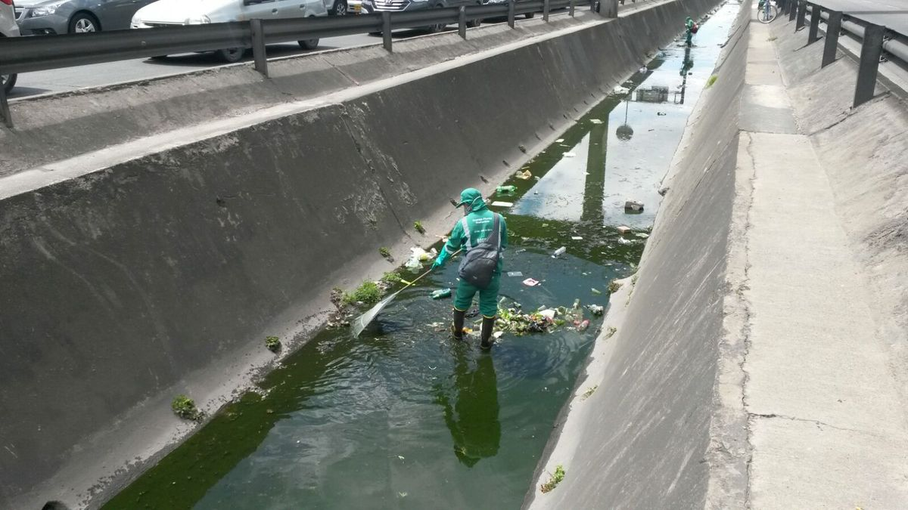

Monitoreo Continuo y Cuantificación de Gases Nocivos Volatilizados en Cuerpos de Agua Receptores de Descargas Industriales
Mediante Redes IoT LoRa y NB-IoT para la Protección de la Salud Pública en Mixquiahuala, Valle del Mezquital.
Air Watch — Vigilante de Aire Industrial
Vigilante de Aire Industrial — Telemetría IoT y Monitoreo Ambiental en Tiempo Real



Ceguera Ambiental y Reactores Químicos a Cielo Abierto
Los canales de riego conducen aguas residuales metropolitanas sin tratamiento que volatilizan compuestos altamente tóxicos directamente sobre zonas densamente pobladas.
El Canal de Riego como Reactor de Evaporación
En la Colonia El Bondho y comunidades aledañas de Mixquiahuala, los efluentes provenientes de la ZMVM sufren turbulencia hidrodinámica y degradación anaerobia acelerada, desprendiendo permanentemente:
La población y autoridades normalizan los malos olores. El olfato humano se satura en segundos y es incapaz de cuantificar la concentración letal o crónica. Sin sensores de telemetría digital, no hay evidencia jurídica ni sanitaria.
Del Prototipo Validado al Ecosistema Web y Móvil
El dispositivo en campo genera los datos; la Plataforma Web y la Aplicación Móvil transforman la telemetría cruda en inteligencia ambiental accesible, comercializable y segura.
Estación Física de Monitoreo IoT
Gabinete hermético IP65 con muestreo de microclima eólica y gases de ribera.
Plataforma Web Air Watch
Centro neurálgico institucional, pasarela comercial y visualización analítica.
Aplicación Móvil Air Watch
Monitoreo personal en el bolsillo para habitantes, inspectores y protección civil.
Arquitectura Tecnológica por Servicios
Desacoplamiento total entre interfaces de cliente, motores de almacenamiento dual y microservicios de ingesta, seguridad y analítica.
Frontend & Usuarios
Consumo interactivo y transaccional
Plataforma Web Air Watch
Landing, catálogo E-Commerce, pasarela de pago, panel de administración y dashboards integrados.
Aplicación Móvil
Monitoreo en tiempo real, mapas de dispersión local, gestión de suscripciones y notificaciones push.
Bases de Datos Híbridas
Persistencia dual optimizada
InfluxDB (TSDB)
Almacenamiento de alta frecuencia de métricas ambientales crudas y procesadas:
Base de Datos Relacional
Gestión transaccional y estructural:
- Cuentas de usuario, credenciales cifradas y roles
- Órdenes de compra, pasarelas e-commerce y facturación
- Inventario físico y vinculación de estaciones por UUID
Backend & Microservicios
Procesamiento y lógica de negocio
Seguridad de la Información en Web y Móvil
Implementación rigurosa de controles de seguridad de la información aplicados a la Plataforma Web, el Comercio Electrónico y la App Móvil.
Control de Acceso y Gestión de Identidad
- A.9.2.1 · Registro y Baja Formal de Usuarios: Proceso riguroso de onboarding digital en la plataforma web, validación de correo electrónico y desvinculación controlada.
- A.9.4.2 · Autenticación Segura (Log-in): Control de intentos fallidos, mitigación de ataques de fuerza bruta y tokens JWT de sesión con expiración estricta.
- A.9.4.3 · Contraseñas Robustas: Hashing con factor de trabajo adaptativo (Bcrypt + Salt) y políticas de complejidad mínima para proteger las estaciones enlazadas.
Criptografía y Redes Públicas
- A.10.1.1 · Controles Criptográficos: Cifrado simétrico AES-256 para almacenamiento de credenciales de red y secretos de configuración de nodos IoT.
- A.14.1.2 · Seguridad en Transmisión de Red: Tráfico 100% encapsulado en TLS 1.3 con certificados SSL/TLS y MQTTS con autenticación mutua (mTLS).
- Protección E-Commerce: Protección absoluta de pasarelas de pago, tokens bancarios y datos transaccionales sin almacenar números de tarjeta en texto plano.
Dispositivos Móviles e Ingeniería Segura
- A.6.2.1 · Política de Dispositivos Móviles: Almacenamiento seguro en el enclave criptográfico del smartphone (Android Keystore / iOS Keychain).
- A.14.2.1 · Desarrollo Seguro: Mitigación de riesgos OWASP Top 10 (protección contra XSS, Inyección SQL y CSRF) en todos los formularios de la web.
- A.14.2.8 · Pruebas de Seguridad: Auditoría de endpoints API, sanitización de payloads de telemetría y validación estricta de esquemas JSON.
Integridad, Privacidad y Respaldos
- A.18.1.3 · Protección de Registros Ambientales: Inmutabilidad de las series temporales de contaminación en InfluxDB contra alteración o borrado deliberado.
- A.18.1.4 · Privacidad de Datos Personales: Cumplimiento con la Ley Federal de Protección de Datos Personales en Posesión de los Particulares (LFPDPPP).
- A.12.3.1 · Respaldos Automatizados: Políticas de snapshot diario en frío y replicación de bases de datos para garantizar RTO y RPO mínimos.
Modelo de Negocio: Planes E-Commerce
Comercialización directa a través de la tienda web de Air Watch con 3 niveles de implementación diseñados para municipios, agroindustrias y comités ciudadanos.
Versión Básica
Monitoreo puntual en sitios fijos con acceso a red WiFi/LAN cercana.
- ✓ Nodo ESP32 con sensores esenciales (MiCS-5524 + SHT31)
- ✓ Muestreo de gases reductores, CO y microclima local
- ✓ Dashboard local web para visualización en red privada
- ✓ Instalación y calibración inicial en Mixquiahuala
- ✕ Transmisión de largo alcance LoRa / NB-IoT
- ✕ Alimentación solar fotovoltaica autónoma
Versión Intermedia
Solución idónea para canales de riego y perímetros urbanos vulnerables.
- ✓ Sensor SGP41 (TVOC/NOx) + MiCS-5524 + SHT31
- ✓ Conectividad dual LoRa 915 MHz + Gateway Celular NB-IoT
- ✓ Gabinete estanco IP65 para intemperie con membrana PTFE
- ✓ Acceso a Plataforma Web Air Watch y Dashboards Grafana
- ✓ Alertas push en la App Móvil para 5 usuarios
- ✓ Mantenimiento preventivo semestral y calibración en sitio
Versión Avanzada
Autonomía energética 100% y analítica predictiva multinodo.
- ✓ Todo lo incluido en la Versión Intermedia
- ✓ Red Multinodo en malla (Mesh) para cubrir cauce completo
- ✓ Sistema solar autónomo: panel monocristalino + batería LiFePO4
- ✓ Analítica predictiva de plumas de gas con modelos de dispersión
- ✓ Generación y exportación de reportes ejecutivos para CONAGUA
- ✓ Soporte técnico prioritario 24/7 y reemplazo de sensores
Demostración en Vivo del Ecosistema
Guía visual e interactiva para recorrer en tiempo real el ciclo completo de la solución Air Watch ante el jurado calificador.
Plataforma Web & E-Commerce
Navegación en vivo por la tienda Air Watch: selección de la Versión Intermedia ($9,500 MXN), flujo de compra, registro con credenciales cifradas e inicio de sesión seguro en el panel de cliente.
App Móvil en Dispositivo
Ejecución de la app móvil: visualización hiperlocal de las estaciones activas en Mixquiahuala, lectura de índices en ppb/ppm y demostración de notificaciones push al rebasar umbrales.
Adquisición en InfluxDB & Grafana
Evidencia de transmisión celular NB-IoT en tiempo real: flujo continuo de paquetes en InfluxDB y paneles dinámicos de Grafana con curvas de eCO₂, TVOC y resistencia sensor.
De la Percepción Subjetiva a la Evidencia Científica
Durante décadas, la población de Mixquiahuala ha convivido con la resignación del "aquí huele mal". Air Watch sustituye la ambigüedad con telemetría objetiva, trazable e inmutable:
Monitoreo continuo para evitar intoxicaciones agudas y enfermedades pulmonares obstructivas crónicas en infancias y adultos mayores.
Series temporales certificables para que ayuntamientos y ciudadanos fundamenten denuncias ante PROFEPA y demandas de remediación ambiental.
Transformación de Mixquiahuala hacia un territorio inteligente con resiliencia climática y gobernanza ambiental informada.
¡Muchas Gracias por su Atención!
Estamos listos y a su entera disposición para la Sesión de Preguntas y Respuestas.
Escanea con tu Smartphone
Accede de inmediato a la Plataforma Web Air Watch para probar el E-Commerce, autenticarte y descargar la App Móvil.